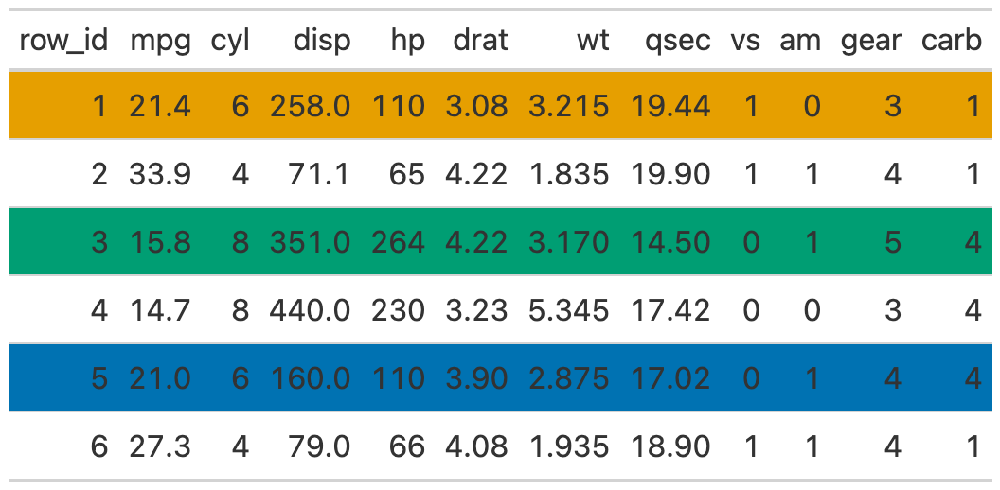
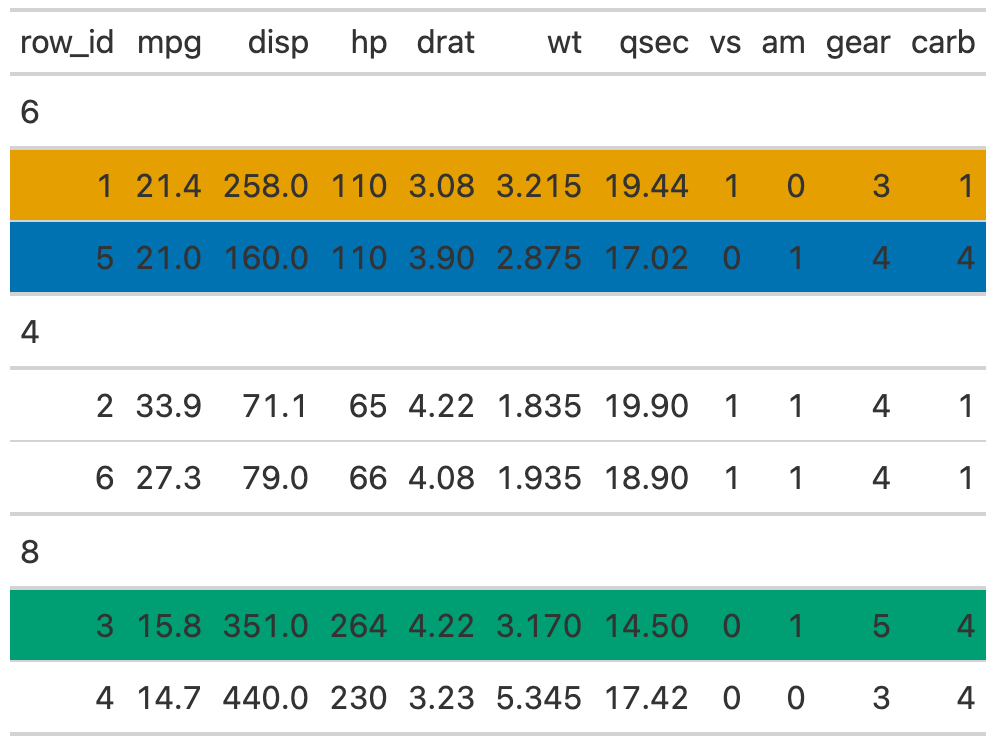
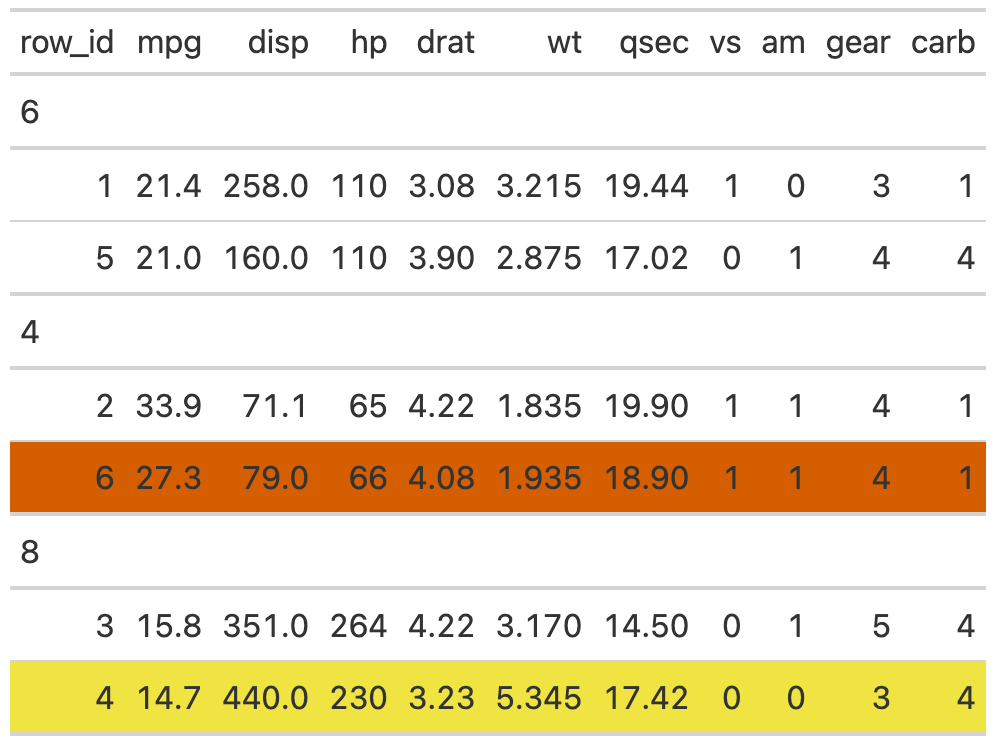
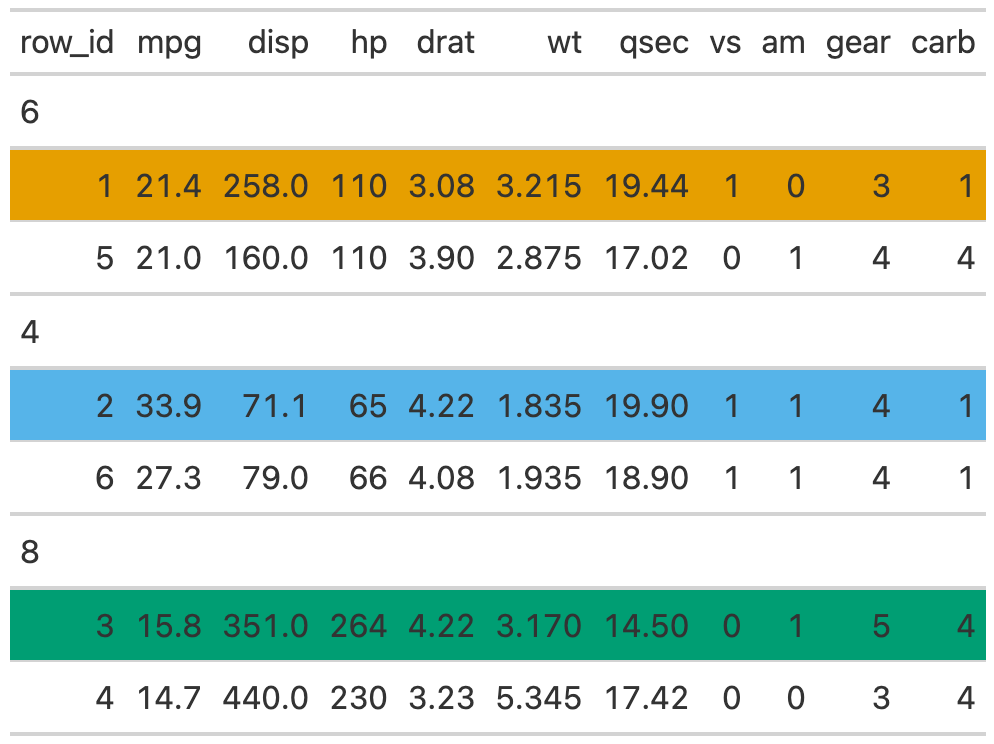

Provides underlying row index for grouped or ungrouped
gt tables. In some cases the visual representation of specific rows is
inconsistent with the "row number" so this function provides the final
output index for subsetting or targetting rows.
Examples
Create a helper function
This helper functions lets us be a bit more efficient when showing the row numbers/colors.
Randomize the data
We will randomly sample the data to get it in a specific order.
set.seed(37)
df <- mtcars %>%
dplyr::group_by(cyl) %>%
dplyr::slice_sample(n = 2) %>%
dplyr::ungroup() %>%
dplyr::slice_sample(n = 6) %>%
dplyr::mutate(row_id = dplyr::row_number(), .before = 1)
#> df
#> A tibble: 6 × 12
#> row_id mpg cyl disp hp drat wt qsec vs am gear carb
#> <int> <dbl> <dbl> <dbl> <dbl> <dbl> <dbl> <dbl> <dbl> <dbl> <dbl> <dbl>
#> 1 10.4 8 472 205 2.93 5.25 18.0 0 0 3 4
#> 2 18.1 6 225 105 2.76 3.46 20.2 1 0 3 1
#> 3 21.4 6 258 110 3.08 3.22 19.4 1 0 3 1
#> 4 13.3 8 350 245 3.73 3.84 15.4 0 0 3 4
#> 5 33.9 4 71.1 65 4.22 1.84 19.9 1 1 4 1
#> 6 22.8 4 108 93 3.85 2.32 18.6 1 1 4 1Ungrouped data
Ungrouped data works just fine, and the row indices are identical between the visual representation and the output.

Grouped data
However, for grouped data, the row indices are representative of the underlying data before grouping, leading to some potential confusion.
tab2 <- gt(df, groupname_col = "cyl")
tab2 %>%
row_sty(1) %>% ## actually row 1
row_sty(3) %>% ## actually row 5
row_sty(5) ## actually row 2
The get_row_index() function gives ability to create an index of the final
output, so you can reference specific rows by number.
tab_index <- get_row_index(tab2)
tab2 %>%
row_sty(4) %>% ## wrong row, actually row 6 visually
row_sty(tab_index[4]) ## correct row, actually row 4
